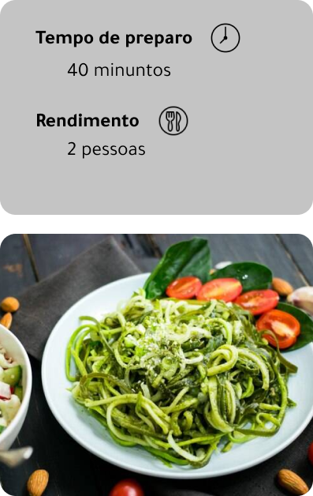

Ingredientes
- 1 kg de abobrinha
- 1 cebola roxa picada
- 1 colher (sopa) de alho picado
- 1 kg de tomate italiano sem pele cortado em cubos
- Tomilho, louro e alecrim a gosto
- Sal, açúcar e pimenta-do-reino moída a gosto
- 1 fio de azeite
- 200 g de tomates-cereja
- 30 g de folhas de manjericão
Modo de preparo
- Passe as abobrinhas por um cortador de legumes em tiras finas para que fiquem no formato de espaguete e reserve;
- Numa panela em fogo médio refogue 1 cebola roxa picada com 1 colher (sopa) de alho picado sem deixar dourar. Adicione 1 kg de tomate italiano sem pele cortado em cubos, o bouquet garni e deixe reduzir o excesso de água, até formar um molho. Acerte o tempero com sal, açúcar e pimenta-do-reino moída a gosto. Apague o fogo e reserve;
- Numa frigideira aqueça 1 fio de azeite e acrescente 200 g de tomate cereja e 30 g de manjericão. Adicione o molho, o espaguete de abobrinha, misture. Apague o fogo e sirva em seguida em um prato, finalizando com queijo coalho ralado, folhas de manjericão e azeite a gosto.
